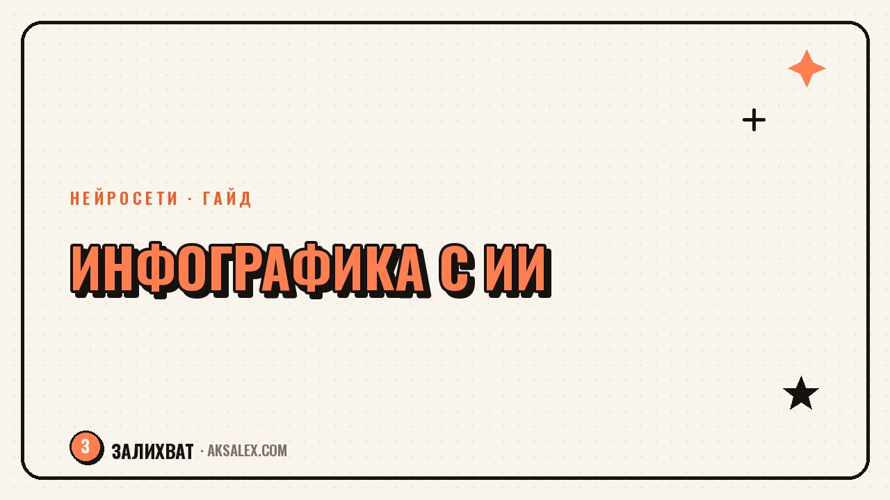

Инфографика с нейросетью: как оформить данные в блоге

Текстовый пост про цифры читают по диагонали, а картинку с теми же цифрами разглядывают и сохраняют. Инфографика решает задачу, которую не решает даже самый живой текст: она показывает разницу, динамику и структуру за одну секунду. Раньше для этого звали дизайнера и ждали пару дней. Сейчас нейросети собирают приличный черновик за пятнадцать минут, а ты только правишь смысл и цифры. Разберём, какие инструменты для этого годятся и как не сделать из инфографики очередную непонятную картинку с цифрами.
Зачем блогу вообще инфографика
Инфографика работает там, где текст утомляет. Сравнение до и после, разбивка бюджета по категориям, этапы процесса, статистика по нише - всё это читается быстрее в виде схемы, чем в виде абзаца с числами. Такой пост чаще сохраняют в закладки: он полезен не один раз, а каждый раз, когда человек забыл цифру и вернулся её посмотреть.
Есть и обратная сторона. Если данных мало или они не структурированы, инфографика получится пустой - красивая рамка вокруг трёх цифр, которые проще было написать текстом. Инфографика оправдана, когда в посте минимум четыре-пять сопоставимых пунктов или явная динамика во времени.
Какие нейросети реально подходят для инфографики
Инструменты делятся на две группы: те, что собирают готовый макет из твоего текста, и те, что рисуют картинку по описанию. Для инфографики с точными цифрами первая группа надёжнее - вторая может исказить число или подпись, потому что генерирует изображение, а не структуру данных.
| Сервис | Что умеет | Когда использовать |
|---|---|---|
| Canva Magic Design | Собирает макет инфографики из текста и шаблонов | Быстрый пост, нужен опрятный вид без дизайнерских навыков |
| Napkin AI | Превращает абзац текста в схему или диаграмму | Когда данные уже написаны текстом и их надо визуализировать |
| Datawrapper | Строит графики и карты по таблице данных | Точные цифры, где важна честная шкала и подписи |
| Flourish | Интерактивные и анимированные графики | Лонгриды и данные с динамикой во времени |
| ChatGPT/DALL-E, Midjourney | Рисуют иллюстративную картинку по описанию | Обложка или фон, а не точная передача цифр |
Как собрать инфографику шаг за шагом
1. Сначала таблица, потом картинка
Не начинай с генератора изображений. Сначала выпиши данные в короткую таблицу: категория и значение. Так сразу видно, хватает ли пунктов для инфографики и нет ли дублей.
- Собери цифры в таблицу: название пункта и значение рядом
- Убери всё, что не сравнивается напрямую с остальным
- Загрузи таблицу в Datawrapper или опиши её текстом в Napkin AI
- Выбери тип: столбцы для сравнения, линия для динамики, доли для распределения
- Проверь подписи и цифры вручную - нейросеть не обязана знать твою нишу
2. Оформление под твой блог
После того как структура готова, доведи цвета и шрифты до фирменного стиля в Canva. Держи одну-две акцентные краски на всю картинку, иначе взгляд не понимает, что важно.
Частые ошибки при работе с ИИ-инфографикой
Главная ловушка - доверять цифры нейросети целиком. Генератор изображений может нарисовать красивый график, где проценты в сумме не дают сто, а подписи не совпадают со значениями. Такую картинку читатель заметит быстрее, чем ты думаешь, и доверие к блогу просядет.
Инфографика - это не картинка про данные, а сами данные в другой форме. Если форма красивее содержания, лучше вернуться к таблице.
- Не бери цифры, которые сгенерировала нейросеть - только твои реальные данные
- Не перегружай одну картинку больше чем семью-восемью пунктами
- Проверяй, что сумма долей в круговой диаграмме действительно сходится
- Подписывай источник данных, если цифры не твои собственные
Где брать данные, если своей статистики мало
Не у каждого блогера под рукой таблица с цифрами. Если пишешь про свою нишу, источником может стать твоя собственная аналитика: охваты, вовлечённость, темы, которые заходят лучше других. Это честные данные, и читателю интересно смотреть именно на них, потому что за ними стоит реальный опыт, а не абстрактная статистика.
Если данные внешние - открытые отчёты платформ, исследования рынка - обязательно указывай источник рядом с инфографикой. Это не формальность: без ссылки на источник картинка выглядит как выдумка, даже если цифры настоящие.
Частые вопросы
Можно ли делать инфографику полностью через нейросеть, без дизайнера?
Да, для блога это нормальный путь. Инструменты вроде Canva или Datawrapper справляются с базовым макетом сами, дизайнер нужен, только если у тебя строгий фирменный стиль или сложная многослойная схема.
Какой формат инфографики лучше заходит в Reels или Stories?
Вертикальный, с одной главной цифрой или графиком на первом экране. В сторис человек листает быстро, и если смысл не считывается за секунду, картинку пролистнут не глядя.
Что делать, если нейросеть неправильно посчитала проценты?
Всегда проверяй сумму долей и подписи вручную перед публикацией. Нейросеть визуализирует то, что ты ей дал, и не обязана сама находить арифметические ошибки в твоих данных.
Нужно ли подписывать, что инфографика сделана с помощью ИИ?
Формального требования нет, но если данные не твои собственные, указывай источник цифр - это важнее, чем упоминание инструмента для оформления.
Сколько времени уходит на инфографику с нейросетью?
На базовый график или сравнение - пятнадцать-двадцать минут вместе с проверкой цифр. Сложная многосоставная схема с несколькими блоками данных займёт больше, в основном за счёт ручной правки макета.
Раз тема оказалась полезной, вот что почитать следующим. Честный разбор: где нейросети реально экономят время блогеру, а где только создают видимость.
Читать статью →а не вручную